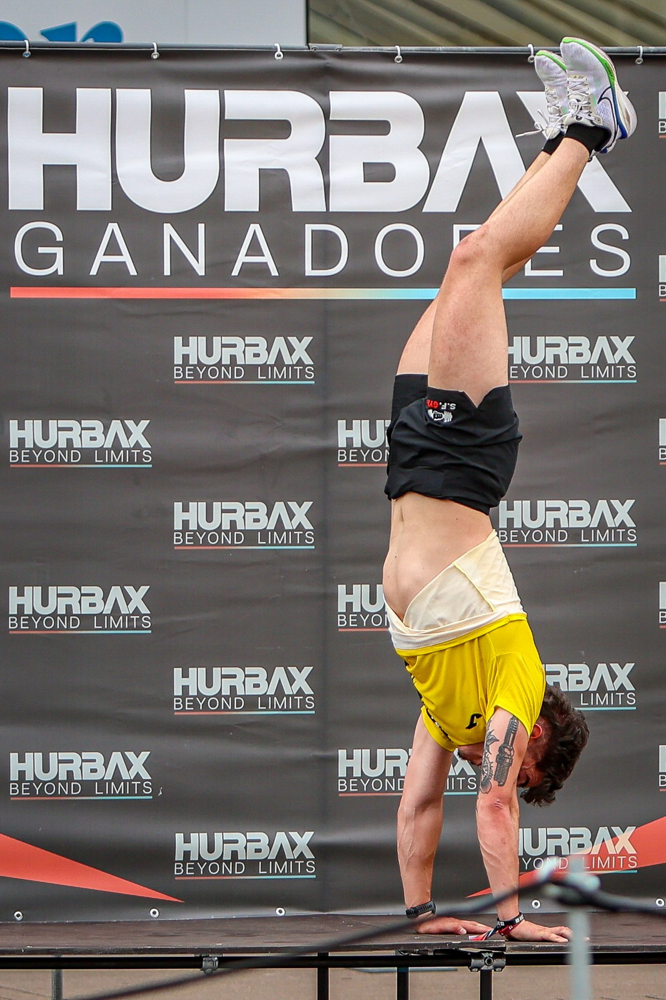
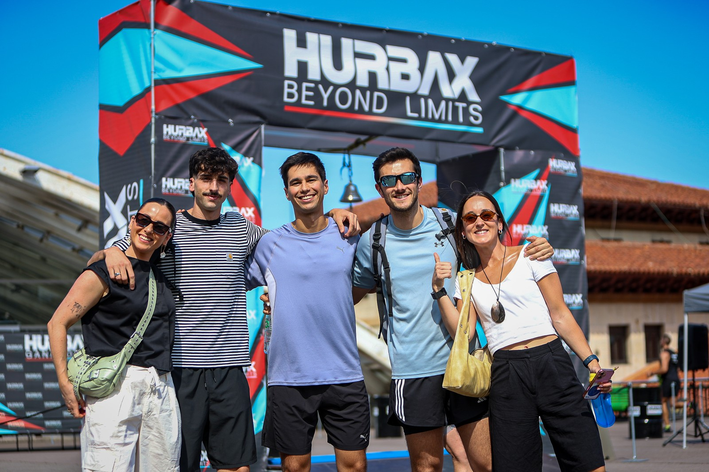

Hurbax staged the Oviedo stage of its 2026 Campeonato de España circuit at Plaza de los Ferroviarios, La Losa, on Saturday 13 June 2026, with event coverage by the Image Media team. The format combined 5km of running, split into segments, with five outdoor strength workouts, open to individual, pairs and team entries across men's, women's and mixed categories. Access for spectators was free and public, with racing starting from 16:00h and the elite wave setting off at 16:55.

José Ángel Hidalgo Izquierdo won the men's individual race in 38:04, topping the M50+ category, while Patricie Viadel Turjanicová won the women's individual race in 40:35 in the F18-29 category, according to official live results. Sixty-three men and 24 women finished the individual competition. In the women's team category, Iron Queens finished fastest among ten teams to complete the course, crossing the line in 1:01:06, with pairs and further team divisions also contested across the afternoon.

Oviedo was the fourth stage of the six-stage Hurbax 2026 Campeonato de España circuit, following stages in Santander on 14 March, Valladolid on 25 April and Pontevedra on 16 May, with Gijón to follow on 26 September ahead of the national final in Madrid on 24 October. Results from each stage count toward a national ranking, with the top 20 finishers in each category across the circuit qualifying for the Madrid final.
The Image Media coverage team at Hurbax Oviedo comprised Michael Rosa, Paulo Nomade, Luis Moreira and Luan Rodrigo.